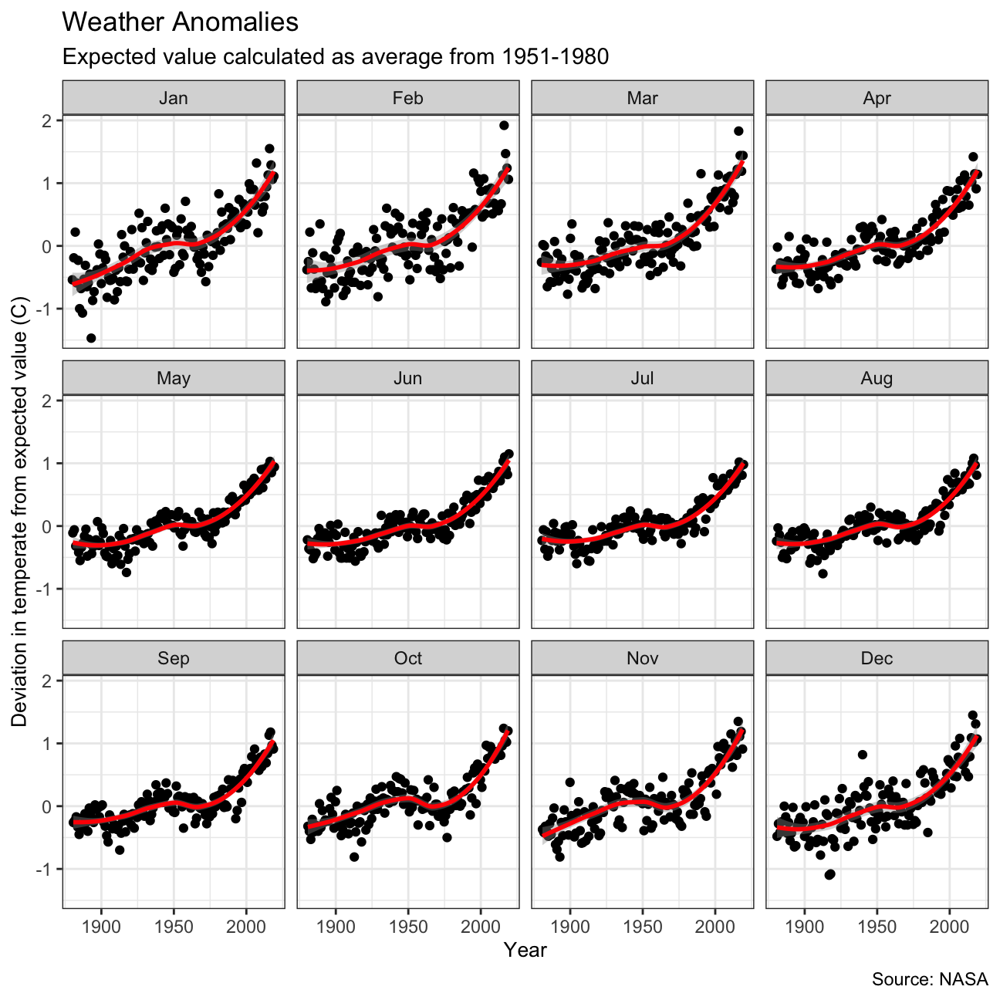

If we wanted to study climate change, we can find data on the Combined Land-Surface Air and Sea-Surface Water Temperature Anomalies in the Northern Hemisphere at NASA’s Goddard Institute for Space Studies. The tabular data of temperature anomalies can be found here
To define temperature anomalies we need to have a reference, or base, period which NASA clearly states that it is the period between 1951-1980.
Let us first load the file.
weather <-
read_csv("https://data.giss.nasa.gov/gistemp/tabledata_v3/NH.Ts+dSST.csv",
skip = 1,
na = "***")Notice that, when using this function, we added two options: skip and na.
The skip=1 option is there as the real data table only starts in Row 2, so we need to skip one row.
na = "***" option informs R how missing observations in the spreadsheet are coded. When looking at the spreadsheet, you can see that missing data is coded as "***". It is best to specify this here, as otherwise some of the data is not recognized as numeric data.
For each month and year, the dataframe shows the deviation of temperature from the normal (expected). Further the dataframe is in wide format.
Let us clean up the data a bit first, by doing two tasks:
Only include the year and the 12 months
Let us convert the data to tidydata using pivot_longer
tidyweather <- weather %>%
# Remove unwanted columns
select(-DJF, -MAM, -JJA, -SON, -`J-D`, -`D-N`) %>%
#Reorders data to long format, with new column month and values named delta
pivot_longer(cols = !1, names_to = "month", values_to = "delta")
glimpse(tidyweather)## Rows: 1,680
## Columns: 3
## $ Year <dbl> 1880, 1880, 1880, 1880, 1880, 1880, 1880, 1880, 1880, 1880, 188…
## $ month <chr> "Jan", "Feb", "Mar", "Apr", "May", "Jun", "Jul", "Aug", "Sep", …
## $ delta <dbl> -0.54, -0.38, -0.26, -0.37, -0.11, -0.22, -0.23, -0.24, -0.26, …As can be seen we now have three variables
year,
month, and
delta, or temperature deviation.
Let us plot the data using a time-series scatter plot, and add a trendline. To do that, we first need to create a new variable called date in order to ensure that the delta values are plot chronologically.
In the following chunk of code, I used the
eval=FALSEargument, which does not run a chunk of code; I did so that you can knit the document before tidying the data and creating a new dataframetidyweather. When you actually want to run this code and knit your document, you must deleteeval=FALSE, not just here but in all chunks wereeval=FALSEappears.
tidyweather <- tidyweather %>%
mutate(date = ymd(paste(as.character(Year), month, "1")),
month = month(date, label=TRUE),
year = year(date))
ggplot(tidyweather, aes(x=date, y = delta))+
geom_point()+
geom_smooth(color="red") +
theme_bw() +
labs (
title = "Weather Anomalies",
subtitle = "Expected value calculated as average from 1951-1980",
caption = "Source: NASA",
y = "Deviation in temperate from expected value (C)",
x = "Year"
)+
theme(axis.title = element_text(size = 10))It is a bit hard to see whether the effect of increasing temperature more pronounced in some months. Let us use facet_wrap() to produce a separate scatter plot for each month, again with a smoothing line.
 Interestingly, the data looks quite consistent over each month and we see a particularly increase in the graph’s upward slopeness from the 1970s and forward.
It is sometimes useful to group data into different time periods to study historical data. For example, we often refer to decades such as 1970s, 1980s, 1990s etc. to refer to a period of time. NASA calcuialtes a temperature anomaly, as difference form the base periof of 1951-1980. The code below creates a new data frame called comparison that groups data in five time periods: 1881-1920, 1921-1950, 1951-1980, 1981-2010 and 2011-present.
We remove data before 1800 and before using filter. Then, we use the mutate function to create a new variable interval which contains information on which period each observation belongs to. We can assign the different periods using case_when().
comparison <- tidyweather %>%
filter(Year>= 1881) %>% #remove years prior to 1881
#create new variable 'interval', and assign values based on criteria below:
mutate(interval = case_when(
Year %in% c(1881:1920) ~ "1881-1920",
Year %in% c(1921:1950) ~ "1921-1950",
Year %in% c(1951:1980) ~ "1951-1980",
Year %in% c(1981:2010) ~ "1981-2010",
TRUE ~ "2011-present"
))If we inspect this by looking at the environment, we see the new intervals.
Now that we have the interval variable, we can create a density plot to study the distribution of monthly deviations (delta), grouped by the different time periods we are interested in. We will color the data by interval also.
ggplot(comparison, aes(x = delta, fill = interval))+
# Density plot with transparency set to 20%
geom_density(alpha=0.4)+
# Fixes theme
theme_bw() +
labs (
title = "Density Plot for Monthly Temperature Anomalies",
subtitle = "Expected value calculated as average from 1951-1980",
y = "Density",
x = "Deviation from expected temperature (C)",
caption = "Source: NASA"
) +
# Fixes colors so they go from blue to red as intervals are higher
scale_fill_manual(values = c("light blue", "dark blue", "yellow", "pink", "red"))We definitely see an increase in the deviation from temperature from 1981 to 2019 as can be seen by the two last intervals. Observe the 1951-1980 interval - it looks very much like a normal distribution. This makes sense as we calculate the expected values based on this interval.
So far, we have been working with monthly anomalies. However, we might be interested in average annual anomalies. We can do this by using group_by() and summarise(), followed by a scatter plot to display the result.
#creating yearly averages
average_annual_anomaly <- tidyweather %>%
group_by(Year) %>% #grouping data by Year
# creating summaries for mean delta
# use `na.rm=TRUE` to eliminate NA (not available) values
summarise(annual_average_delta = mean(delta, na.rm=TRUE))
#plotting the data:
ggplot(average_annual_anomaly, aes(x=Year, y= annual_average_delta))+
geom_point()+
#Fit the best fit line, using LOESS method
geom_smooth() +
#change to theme_bw() to have white background + black frame around plot
theme_bw() +
labs (
title = "Average Yearly Anomaly",
subtitle = "Expected value calculated as average from 1951-1980",
y = "Average Annual Delta",
x = "Year"
) deltaNASA points out on their website that
A one-degree global change is significant because it takes a vast amount of heat to warm all the oceans, atmosphere, and land by that much. In the past, a one- to two-degree drop was all it took to plunge the Earth into the Little Ice Age.
Let us construct a confidence interval for the average annual delta since 2011, both using a formula and using a bootstrap simulation with the infer package. Recall that the dataframe comparison has already grouped temperature anomalies according to time intervals; we are only interested in what is happening between 2011-present.
formula_ci <- comparison %>%
filter(interval == "2011-present") %>%
# There is a lot of extra columns - let us just find the necessary ones
select(1:3, 6) %>%
summarize(mean_delta = mean(delta, na.rm = TRUE),
count_delta = n(),
sd_delta = sd(delta, na.rm = TRUE),
se_delta = sd_delta / sqrt(count_delta),
lowerci_delta = mean_delta - 1.96 * se_delta,
upperci_delta = mean_delta + 1.96 * se_delta) %>%
kable(caption = "TABLE 1.1: Confidence interval for temperature anomalies in celsius for period 2011-2019",
col.names = c("Average delta", "Observations", "Standard deviation", "Standard error", "Lower CI", "Upper CI")) %>%
kable_classic("striped", full_width = FALSE)
formula_ci| Average delta | Observations | Standard deviation | Standard error | Lower CI | Upper CI |
|---|---|---|---|---|---|
| 0.966 | 108 | 0.262 | 0.025 | 0.916 | 1.01 |